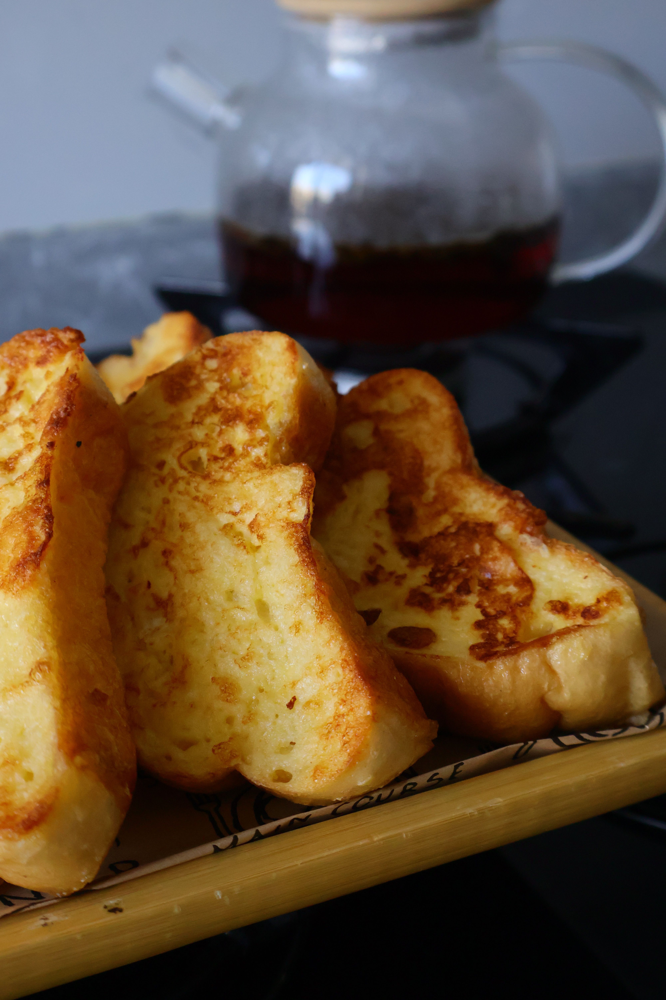

French Toast
French Toast, is a fairly simple recipe. You just need bread,
eggs, milk, cinnamon and a sweetner!
Recipe:
- Gather all the ingredients
- Beat eggs, milk, sugar and cinnamon into a smooth mixture
- Soak bread in the mixture and toast lightly on both sides
- Serve hot!
